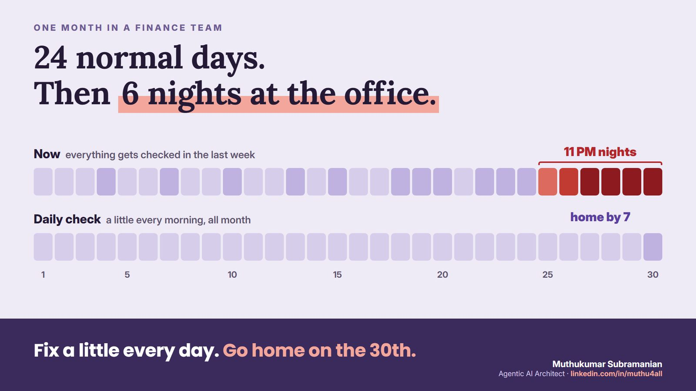
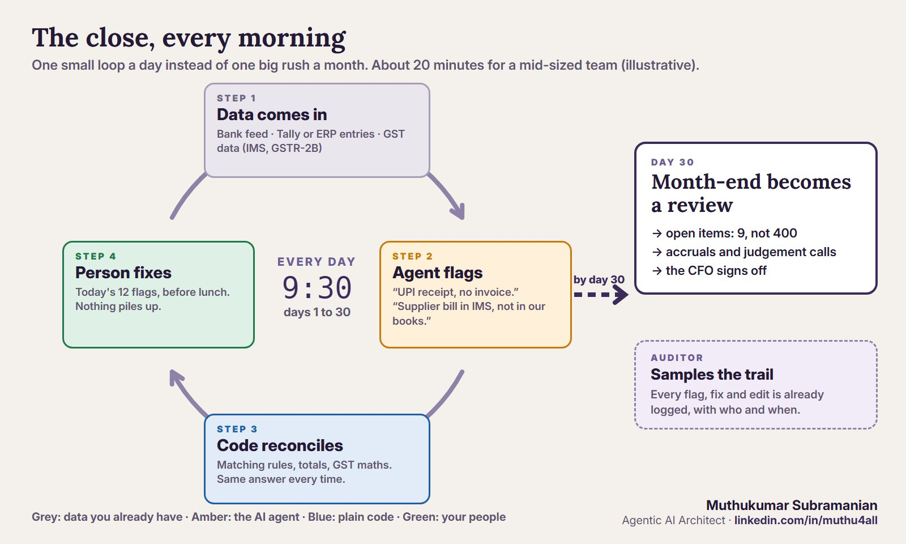
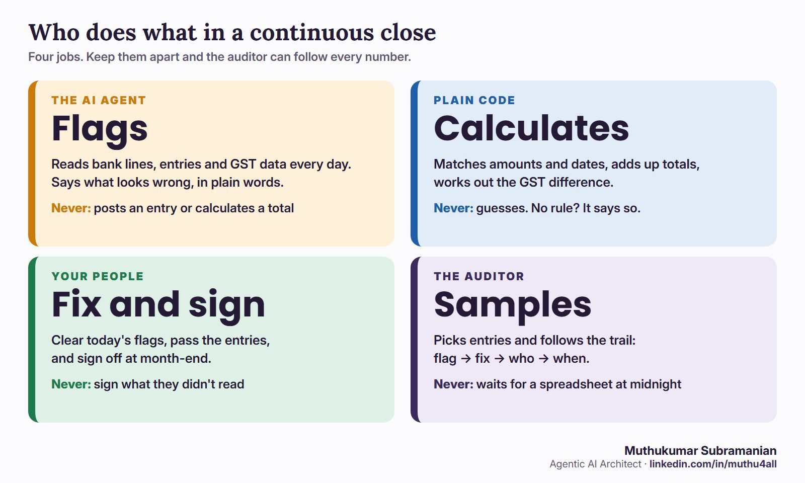
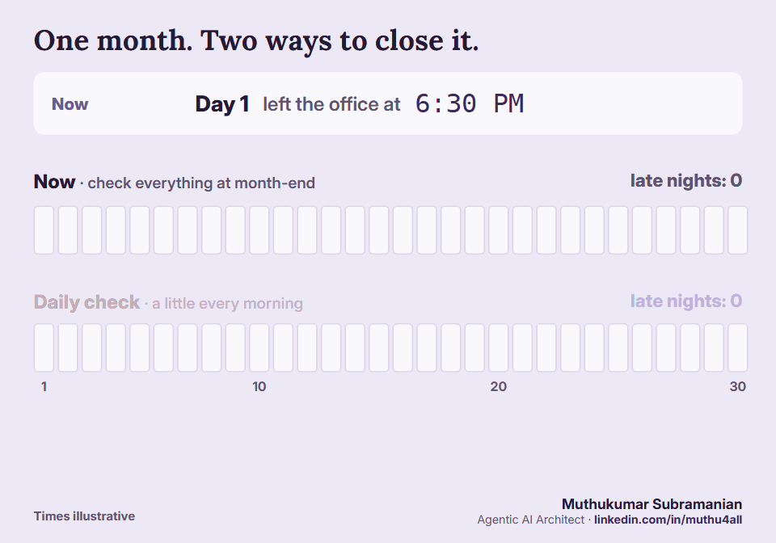

Why Your Finance Team Still Loses the Last Week of Every Month.
By Muthukumar Subramanian · Agentic AI Architect

It's 10:50 PM on the 29th. Meena, accounts manager at an auto-parts distributor in Ambattur, sends her daughter the same message she sent last night: "Eat. Don't wait for me."
Three windows are open on her screen. The bank statement. Tally. The GSTR-2B download. 1,140 bank lines this month, and 37 of them don't match anything in the books. A customer's UPI payment with no invoice against it. A supplier's bill that's on the GST portal but not in the purchase register. A transfer booked twice.
None of these happened this week. Most of them happened on the 4th, the 11th, the 17th. They just waited quietly for someone to look. (Meena, the company and every number here are illustrative. The feeling isn't.)
Her team of five has worked two Saturdays this month. Ask any of them when the month ends and they'll tell you: about six days after everyone else's.
Month-end isn't a deadline problem. It's a batch problem.
The problem: we check everything at once, so we find everything at once
Most finance teams run the close like a batch job, and the batch is people.
→ For 24 days, transactions flow in from the bank, from sales, from suppliers, from GST.
→ Nobody reconciles them as they arrive, because there's always something more urgent.
→ Then, in the last week, everyone checks everything, finds everything, and fixes everything. At night.
It's not just small companies. APQC's benchmark, as reported by CFO.com, put the median at about 6.4 calendar days to close the monthly books, with the slowest quarter of companies taking 10 or more. Other surveys count differently and land in a similar place. Call it a week a month, give or take.
That's a quarter of the year spent closing the last one. And the cost doesn't show up in any report. It shows up as missed dinners, cancelled weekends, and good accountants quietly leaving for jobs with saner months.
Your finance team isn't slow. Their process is batched.
The solution: close a little every day
The idea has a name, continuous close, or continuous accounting. The close-management vendors have talked about it for years. What's new is that an AI agent can now do the boring first pass every morning, at a cost a mid-sized Indian company can afford.
Here's the daily loop:
→ Data comes in. Bank feeds, entries from Tally or your ERP, and GST data. Some of this plumbing already exists: TallyPrime 6.0 added connected banking with auto bank reconciliation for supported banks, and the GST portal's Invoice Management System (IMS) lets you accept or reject supplier invoices through the month instead of finding them in GSTR-2B later.
→ The agent flags. Every morning it reads yesterday's bank lines, entries and GST records and writes, in plain words, what looks wrong: "This ₹18,400 UPI receipt has no invoice. The narration mentions an order from Sri Murugan Traders."
→ Code reconciles. Matching amounts and dates, adding up totals, working out the GST difference: that's plain code, with rules you can read. Same input, same answer, every time.
→ A person fixes. Twelve flags before lunch, not 400 in the last week.
→ Month-end becomes a review. Open items, accruals, judgement calls, sign-off. An afternoon, not a week.

On 22 October I wrote "Let AI Talk. Let Code Count." about why an AI model shouldn't be the thing that adds up your invoice. This is the same rule, applied to a whole month. The agent is allowed to notice. It is never allowed to calculate. If it says "these two don't match", code tells you by exactly how much.
Who does what
The design only works if four jobs stay apart.

The auditor part matters more in India than people realise. Since 1 April 2023, companies have had to keep their books in accounting software with an audit trail (an edit log) that can't be switched off, and auditors have to report on whether they did. So the trail already exists. A daily close just fills it with something better: who flagged what, who fixed it, and when. Your auditor stops asking for a spreadsheet and starts sampling the trail.

What could go wrong
I'd be lying if I said this was plug-and-play.
Bank feeds aren't everywhere. Connected banking works with a list of banks, and plenty of companies still bank somewhere that means downloading a statement. That's fine. The agent can read a statement. But someone has to upload it every day.
Day one is noisy. The first morning, the agent will flag 300 things, and 250 of them will be "that's how Ravi always books it". If nobody tunes the flags in week one, people stop reading them by week two.
The agent must never post entries. Not "only small ones". Not "only obvious ones". The moment it posts, your audit trail says "AI" next to a number and nobody can explain why.
Some work stays at month-end. Accruals, provisions and judgement calls don't happen daily, and they shouldn't.
Data leaves the building. Bank lines and customer names going to a cloud model need a decision from someone senior: which provider, which region, what's masked. Some companies will run the agent on a model on their own servers instead.
And the hardest one: habit. Finance teams are rewarded for month-end heroics. A daily 20 minutes is less dramatic than a Saturday that saves the close. Someone senior has to say the boring version is the better one.
This is where a forward deployed engineer (FDE), an engineer who works inside the customer's team on their real systems, earns their money. Two weeks sitting with the accounts team, learning the 40 known oddities ("Kumar Enterprises always pays in two parts"), and writing them down as rules before the agent goes live. After that, someone has to own the agent's flags day to day. Some call that an AgentOps role. The titles are still settling.
The opportunity
→ For CFOs and finance heads: pick one bank account and run a daily check on it for a month. Count the late nights before and after. That's your business case.
→ For accountants and finance teams: you're the ones who know which 40 oddities are normal. That knowledge is about to become the most valuable part of the system. Write it down.
→ For CA firms: you already do books for dozens of SMEs. A daily check across all your clients, with a person reviewing flags each morning, is a service you can sell on retainer.
→ For software builders and Tally partners: close tools like BlackLine, FloQast and SAP's Advanced Financial Closing serve big companies well. India's mid-market runs on Tally, GST portal downloads and UPI. A daily-close layer built for that stack, with an FDE to set it up, is wide open.
Your turn 👇
Daily close or month-end close: which would your finance team pick?
Tag the accountant who hasn't had dinner at home on the 30th in years.